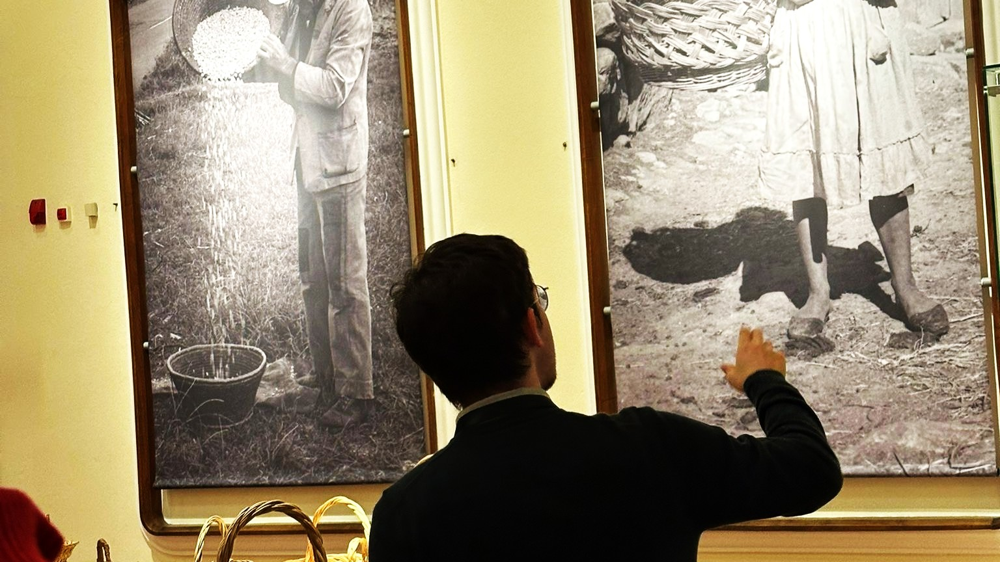

Hello! Welcome to my academic website. I am Gonçalo, a PhD student in Political Science and International Relations at ISCTE - University Institute of Lisbon. I am conducting my research under a fellowship awarded by the Portuguese Foundation for Science and Technology (2025.00574.BD).
You can find more information about me on my CiênciaVitae, my ORCID or my institutional page.

Research interests
Portuguese foreign policy, Security studies, Memory policies, Imperial politics and (post)colonialism, States and nationalism, the Portuguese Revolution, International Relations Critical Theory.
Methodological tools
Critical discourse analysis, Ethnography, Archival research, Documental critique, Extensive interviews, Creative methods.
Education
- Since 2025: PhD in Political Science (International Relations) | University Institute of Lisbon (ISCTE-IUL)
- 2024: Postgraduate degree in Social Research Methods | Social Sciences Institute - University of Lisbon (ICS-UL)
- 2022–2024: MSc in Modern and Contemporary History | University Institute of Lisbon (ISCTE-IUL)
- 2019–2022: BA in Political Science and International Relations | NOVA University of Lisbon (NOVA-FCSH)